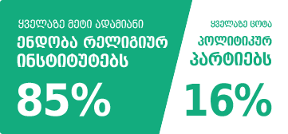
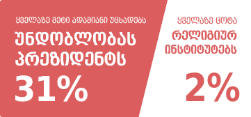
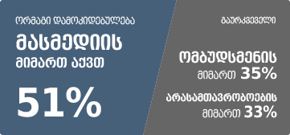
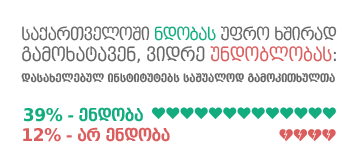

ვის ენდობა საქართველოს მოსახლეობა?
კავკასიის კვლევითი რესურსების ცენტრმა მთელი ქვეყნის მასშტაბით 2502 ადამიანი გამოკითხა. კვლევა პირისპირ ინტერვიუს მეთოდისა და კლასტერული შერჩევის გამოყენებით 2012 წლის 26 ოქტობრიდან 29 ნოემბრამდე მიმდინარეობდა.
ინტერვიუერებმა რესპონდენტებს 17 სხვადასხვა სოციალური ინსტიტუტისა თუ პოლიტიკური გაერთიანების მიმართ ნდობის შეფასება სთხოვეს. მათი პასუხების მიხედვით, ჯამპსტარ ჯორჯიამ ააგო ინტერაქტიული ვიზუალიზაცია, სადაც წარმოდგენილია 17-ივე ინსტიტუტისა თუ გაერთიანების რეიტინგი ოთხი სხვადასხვა პასუხის მიხედვით: “ვენდობი”, “არ ვენდობი”, “ნაწილობრივ ვენდობი, ნაწილობრივ არა” და “არ ვიცი”.



